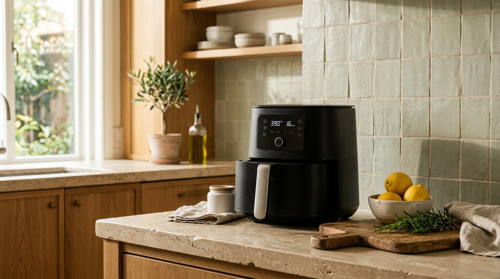

Before you buy
Wallpaper smoothing kit
Check the tools your wall covering calls for and which surfaces they are meant to touch.
Compare wallpaper tools, kitchen storage and countertop appliances by how they fit your space and routine.
Explore buying guides →
Check the tools your wall covering calls for and which surfaces they are meant to touch.
Measure the roll and the space you need to remove it; check the installation method against the cabinet finish.
Measure your widest pan and tallest lid, and check fit with the cabinet door closed.
No individual products are listed yet. Start with these checklists to narrow down what you need.
Compare the cooking surface, the space you have, and how you unload dinner.
Start with your usual portions, not the largest number on the box.
Picture the appliance with the drawer or door open, and the parts in your sink.
Choose the functions you would use weekly and check what each requires.